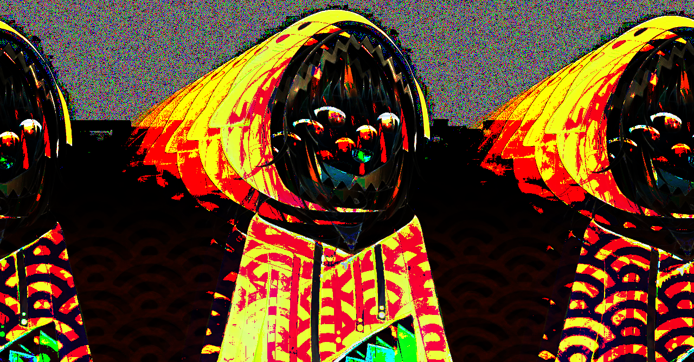

"Mess up once, it looks ugly. Mess up many times, then it becomes your style" - unkown

This is Gawr Gura, a recently trending youtube streamer that uses a virtual avatar, aka: a V-Tuber. This glitch was made during my Art-74 class and created by taking the source code image and editing it in audacity using the echo effect. Using this echo effect represents how other streamers are beginning to use virtual avatars to portray an alternate character of themselves and bring into the discussion weather or not if this is a good or bad thing for the future of streams.